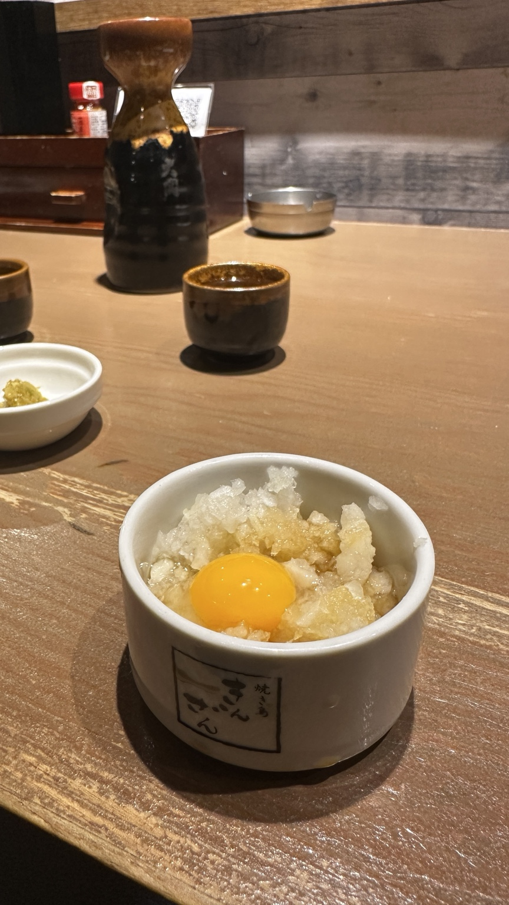
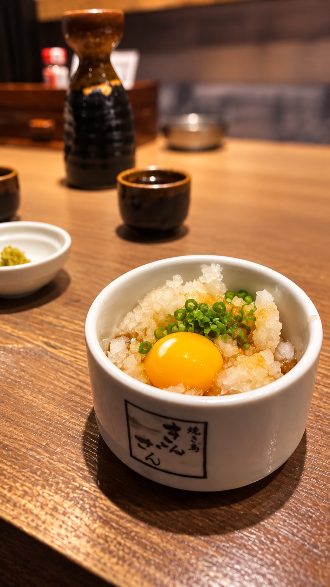

RESTAURANT MARKETING / OSAKA
お店の魅力を、
もっと伝わるカタチに。
写真・動画・SNSコンテンツを通して、料理の美味しさとお店の雰囲気を「行ってみたい」に変える。飲食店のためのシンプルなマーケティングサポートです。
まずは相談するBEFORE → AFTER
写真が変わると、伝わり方も変わる。
いつもの一枚を、もっと「食べたい」が伝わる一枚へ。SNSで最初に見られるのは、料理そのものではなく“写真”です。

Before
AfterWHAT WE DO
必要なことを、シンプルに。
写真コンテンツ料理や店内の写真を、SNSで魅力が伝わるビジュアルへ。
ショート動画Instagram Reelsなど、短く見やすい動画コンテンツを制作。
SNS投稿日本のお客様に自然に届く投稿デザインとキャプションをサポート。
広告サポート必要に応じてSNS広告の設定・運用もサポート。
TRIAL PLAN
まずは、小さく試す。
大きな契約から始める必要はありません。まずは実際のコンテンツを見て、T.R.Yのサポートがお店に合うか確かめてください。
初回トライアル
¥35,000
飲食店向けのコンテンツ制作・SNSサポートを、お店の状況に合わせてご提案します。